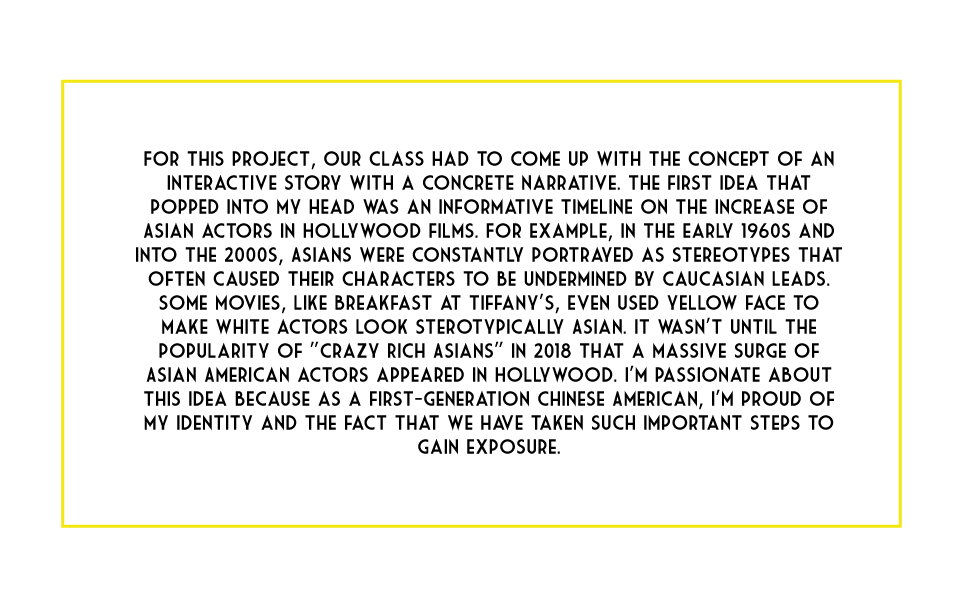
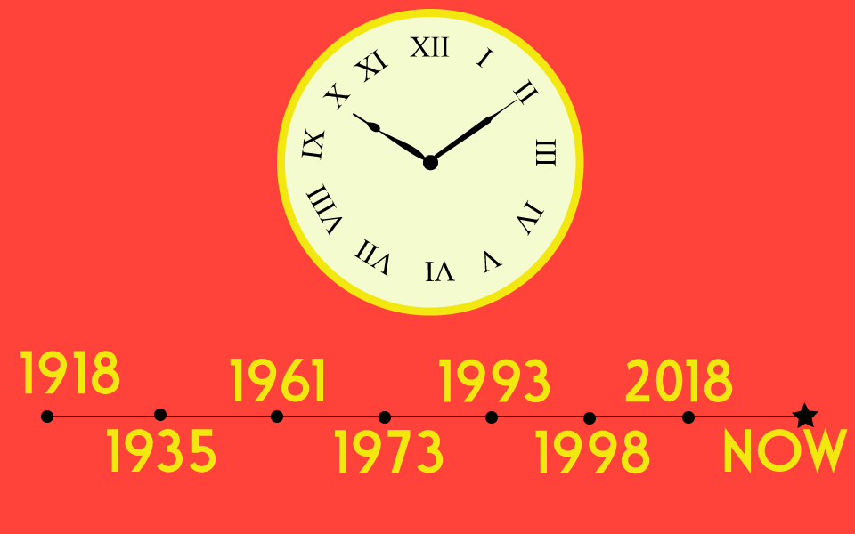
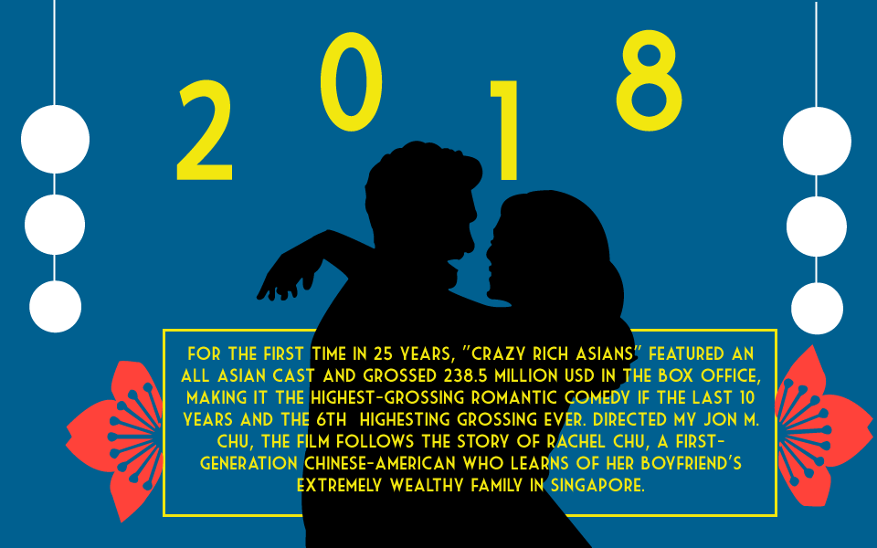

Hi there! My name is Katy, and I’m an undergraduate student at Binghamton University majoring in English with a minor in graphic design and an interest in the digital media and journalism fields. I enjoy being creative and innovative, which I tend to show in my own writing. I also love to explore new things: cultures, destinations or even food.
For this project, the ARTS412 class collaborated on creating a book of typographic riddles. Each person designed about 5-6 different mock-ups for riddles that covered popular movie titles. Then, we all presented our different movie title riddle designs to the class and decided on our final 1-2 designs.
We were tasked to sketch an icon that fits in with the early Macintosh interface and design an icon that is indispensable. I sketched a watch icon since I always have to check the time, whether it's on a physical watch, clock, or phone.
This is my final icon for Project 2: Working With the Past. I created a watch with Adobe Illustrator based on the sketch that I drew.
Because I had some time to explore other icon options, I decided to also make an icon that represents skincare. Skincare products are indispensable to me because everyday when I wake up, I make sure to follow my specific skincare routine. I'm also really interested in skincare and beauty. I use a serum that is similar to the serum bottle that I created as my icon.



As our last final project, I stuck with my initial idea of creating a timeline based on the increase of Asian representation in Hollywood. My first step to getting the timeline together was having accurate information, as my project took an informative route. I used Google to look at different landmarks of Asians in films and media and compiled them into a Google Doc. Then, I separated each important landmark by year and wrote down the information into paragraphs for each panel of my timeline. After all the information was on the artboards, I got to my design ideas. I knew I wanted the designs to be bold and follow the similar designs used in the movie Crazy Rich Asians, so I made a color palette composed of blue, red, yellow, purple, black, and white. For the images, I decided to use a vector graphic style that a lot of geometric shapes, silhoulettes, and important items that symbolize each era. I also followed a pattern of switching off between different colors for the backgrounds from my color palette. The main difficulty I had with the project was coding everything in, especially since I had no prior coding knowledge before this class. After a lot of trial and error, I finally got my timeline to work properly on my website with clickable buttons and arrows. The project was a bit difficult, but it wasn't impossible to get one, and I'm very happy with the end result!